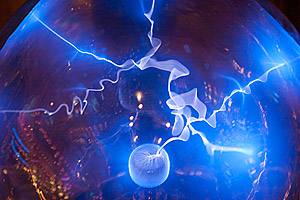
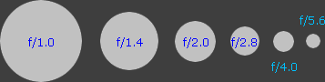
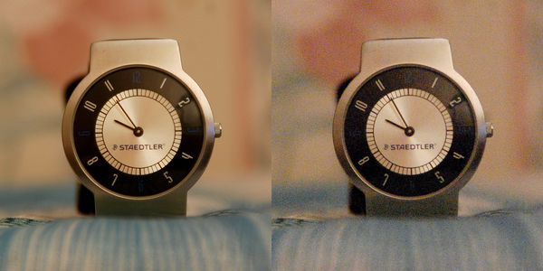
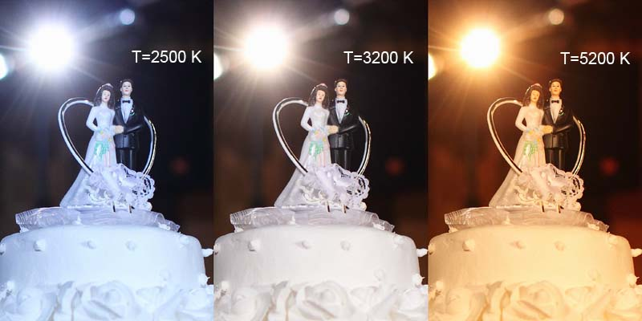
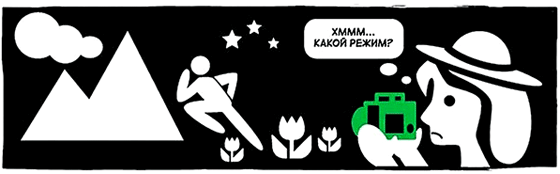
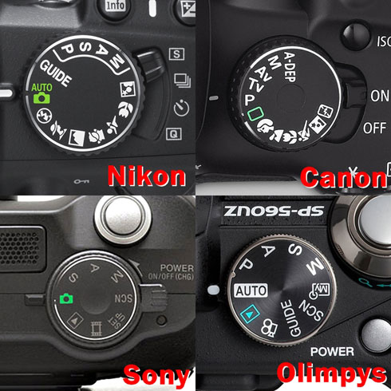
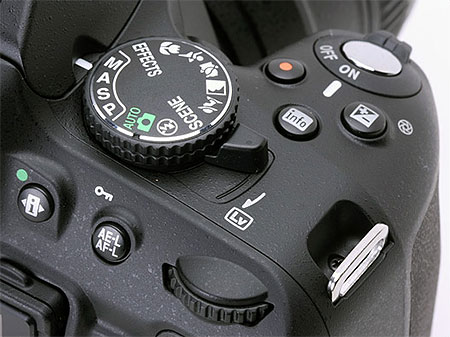

Наверх
Выдержка
Затвор камеры определяет,  когда сенсор камеры открыт или закрыт для света, поступающего через объектив.
Длительность выдержки определяет, на какой промежуток времени сенсор будет открыт. «Выдержка»
и «длительность выдержки» обозначают одно и то же, и сокращение выдержки
означает сокращение длительности выдержки.
В цифрах. Влияние выдержки на экспозицию, вероятно, оценить проще всего:
оно соотносится с количеством света, поступающего в камеру, как 1:1. Если время выдержки удваивается, количество света, поступающего в камеру,
также удваивается. Кроме того, для этого параметра возможен наиболее широкий диапазон значений:
Объясним почему
когда сенсор камеры открыт или закрыт для света, поступающего через объектив.
Длительность выдержки определяет, на какой промежуток времени сенсор будет открыт. «Выдержка»
и «длительность выдержки» обозначают одно и то же, и сокращение выдержки
означает сокращение длительности выдержки.
В цифрах. Влияние выдержки на экспозицию, вероятно, оценить проще всего:
оно соотносится с количеством света, поступающего в камеру, как 1:1. Если время выдержки удваивается, количество света, поступающего в камеру,
также удваивается. Кроме того, для этого параметра возможен наиболее широкий диапазон значений:
Объясним почему
В творческой съёмке или для водопадов, например, размытие движением иной раз желательно, тогда как в большинстве других случаев его нужно исключить. Как следствие, обычно выдержку выбирают, исходя из значения, которое сможет обеспечить резкий снимок — либо для заморозки движения, либо для исключения сотрясения камеры при съёмке с рук.
Как узнать, какая выдержка обеспечит резкий снимок с рук? Используя цифровые камеры, проще всего поэкспериментировать и оценить результаты на экране камеры (при полном увеличении). Если при правильном выборе фокуса снимок получается смазанным, скорее всего, понадобится сократить выдержку, держать руки более стабильно или использовать штатив.Заключение
В вопросе со значениями выдержки фотоаппарата
нет каких-либо универсальных советов. Экспериментируйте,
играете со значениями выдержки, устанавливайте выдержки разной длины в различную погоду.
Практика позволит вам придумать свои неповторимые эффекты, которые станут фишкой ваших фотографий.
Диафрагма
Диафрагма это на сколько широко раскрыты так называемые лепестки диафрагмы. Чтобы было понятно, приведу жизненный пример. Когда вы находитесь в слабоосвещённом помещении, зрачок глаза расширяется и таким образом воспринимает больше света. Аналогично действует и диафрагма, если вы полностью раскрываете лепестки диафрагмы – камера воспринимает большее количество света. Диафрагма напрямую зависит с глубиной резкости и экспозицией.
 Как бы вы не искали слово «диафрагма» в фотоаппарате, вы его не найдёте. Более понятным и
знакомым для вас будет «f/число». Поймите раз и навсегда, открытая диафрагма будет равняться
маленькому числу, к примеру, f/1.8. Закрытая диафрагма наоборот равняется большим числам, таким
как f/11. Открытая диафрагма дает возможность держать в фокусе небольшую плоскость, закрытая
делает нам всё в фокусе.
На сколько объект в фокусе называется глубиной резкости.
Как бы вы не искали слово «диафрагма» в фотоаппарате, вы его не найдёте. Более понятным и
знакомым для вас будет «f/число». Поймите раз и навсегда, открытая диафрагма будет равняться
маленькому числу, к примеру, f/1.8. Закрытая диафрагма наоборот равняется большим числам, таким
как f/11. Открытая диафрагма дает возможность держать в фокусе небольшую плоскость, закрытая
делает нам всё в фокусе.
На сколько объект в фокусе называется глубиной резкости.
В то же время малое число f/1.8 (открытая диафрагма) уменьшает вашу выдержку, а большое число f/11 (закрытая диафрагма) увеличивает выдержку. Мой вам совет, поэкспериментируйте с выдержкой и диафрагмой, и вы сразу всё поймёте.
Что такое ISO в фотоаппарате?
Вы наверняка натыкались в своём фотоаппарате на параметр под кодовым названием ISO, сейчас я постараюсь максимально понятно объяснить для чего это необходимо и как его нужно использовать.ISO – это светочувствительность фотокамеры к свету. Чем выше ISO, тем выше светочувствительность и тем больше шумов у вас на фотографии. Поэтому всегда старайтесь использовать низкое ISO и у вас будут отличные фотографии без шумов.
Если вы фотографируете при недостаточном освещении с рук, можете поднять значение ISO, при этом, открыв полностью диафрагму, этим самым вы уменьшите значении выдержки и не смажете фотографию. Если вы снимаете ночью – нужно использовать низкое ISO и штатив, на который можно поставить камеру. Если вы фотографируете со вспышкой, вам так же не нужно высокое ISO. Хочу так же отметить, что количество шумов при высоких ISO напрямую зависит от размера матрицы вашей камеры. То есть, если у вас мыльница – не ждите хороших результатов уже с ISO800, при недостаточном освещении у вас на фотографии получится полная мазня. Поэтому лучше установить низкое ISO и поставить камеру на штатив. Если у вас D700/D3 (аналогичный Sony или Canon), можете смело ставить ISO3200 и ощутить приятное удовлетворение того, что 2500$ были потрачены не зря ;) Да кстати, вспомнил ещё про Auto ISO. Автоматическое ISO довольно капризная функция, если у вас мыльничка лучше не заморачивайтесь и поставьте ISO100. Если у вас зеркальная камера, скорее всего, на ней вы сможете контролировать Auto ISO путём ограничения, к примеру вы выставляете самый высокий порог ISO800 и выше этого значения ISO не подымится.
Что такое баланс белого в фотографии.
Народ, когда фотографирует, особо не парится над тем, что у них получается. Для 99% фотография, которая представлена выше, будет просто замечательной – но мы ведь с вами не такие, мы знаем что она отдает отвратительным красно-желтым оттенком… Поэтому сделаем ещё одну, но с нормальными цветами.
Баланс белого (ББ) — это процесс цветокоррекции, в результате которой объекты, которые глаз видит как белые, будут показаны белыми на вашем снимке. Баланс белого камеры должен принимать во внимание «цветовую температуру» источника освещения, которая подразумевает относительную теплоту или холодность белого света. Наши глаза достаточно хорошо отличают белый при различных источниках света, но для цифровых камер автоматический баланс белого (AWB) часто создаёт большие трудности. Неверный баланс белого может породить синюшные, восковые или даже трупно-зелёные оттенки, которые выглядят неестественно и особенно портят портреты. Применение ББ в традиционной плёночной фотографии означало использование различных оттеночных фильтров, каждый для определённых условий съёмки, но в цифровой фотографии это больше не требуется. Понимание цифрового ББ поможет вам избежать искажений цвета, вызванных AWB вашей камеры, и тем самым повысить качество ваших снимков при расширенном диапазоне условий освещения.
Режимы съемки от P до M
Режимов этих в обычном фотоаппарате — не более 4. Есть меньше, но с некоторых пор производители придумали и 5, так что цифра не фиксированная. Рассмотрим их подробнее:
P — просто программный режим. Фотоаппарат сам выбирает минимальную выдержку и диафрагменное число («экспопару»), требуемые для четкого снимка в данных условиях. Можно условно приравнять его к режиму «авто», с тем лишь исключением, что обычно можно настроить ряд параметров, в отличие от сюжетных программ или режима «авто» (т.е. баланс белого, чувствительность матрицы, настройки jpeg и пр.). Режим абсолютно безмозглый и потому имеющий сомнительную полезность.
A (или Av) — режим приоритета диафрагмы. Пользователь устанавливает требуемое диафрагменное число, а фотоаппарат — выдержку, в соответствии с данными экспонометра. Наиболее любимый большинством фотографов режим, в котором есть возможность полноценного управления глубиной резкости (открытая диафрагма, например, 1.8 или 2.8 соответствует малой глубине резкости и часто именуется как «большая дырка», закрытая, например, 16 или 22, наоборот — большой). Единственный недостаток режима заключается в том, что диапазон выдержек, с которым она работает, ограничен снизу, а именно, на выдержках длиннее к, примеру, 4 секунд, в ряде фотоаппаратов работать не будет, хотя в фотоаппарате в спецификации указано и больше — просто считается, что больше 4 секунд кадр все равно смажется, если фотоаппарат держать руками. Удобно также, когда вы хотите добиться «максимальной резкости» для конкретного объектива — если считается, что на 2.8 стекло мылит, а на 4-8 выдает лучшую резкость, то просто нужно поставить 5.6 и забыть о мыльных кадрах.
S (или Tv) — режим приоритета выдержки. Пользователь устанавливает требуемую выдержку, а фотоаппарат — диафрагму. Режим весьма ограниченный и, как правило, применимый при съемке спортивных событий, когда необходимость поймать момент гораздо важнее проработки фона. Под спортивные события, кстати, попадают дети, которых порой можно «ухватить» только на 1/250 сек. — тогда уж точно не убежит. Можно использовать длинные выдержки — к примеру, при съемке с проводкой.
M — полностью ручной режим. Пользователь вручную устанавливает все параметры. Обычно автоматическая чувствительность может устанавливаться в первых трех режимах, а в ручном недоступна… ответ прост: этот режим выбирают те, кто экспериментирует или точно знает, что делает. Режим полностью снимает ограничения на ночную съемку, т.к. дает возможность пользователю поставить абсолютно любую выдержку и диафрагму на любом значении чувствительности. Также можно делать сознательно недодержанные или передержанные снимки, снимать с объективами, которые не предназначены для данного фотоаппарата и пр. Ночная съемка заслуживает отдельной оговорки — так как времени много (а небо черное, что вводит экспонометр в ступор, т.к. он будет считать снимок темным и бесконечно увеличивать выдержку — для чего и введено ограничение в режиме приоритета диафрагмы), можно долго постоять возле штатива с разными значениями экспопараметров, чтобы добиться желаемого эффекта: смазывания воды или фонарей автомобиля при длинной выдержке, проявления звезд на небе при очень длинной выдержке или съемки падающих капель воды при очень короткой.
Sv — режим приоритета чувствительности, сходный с программным режимом (P), но помимо выдержки и диафрагмы, фотоаппарат выбирает чувствительность, с возможностью быстрой коррекции пользователем
TAv — режим приоритета диафрагмы и выдержки, когда пользователь устанавливает необходимую диафрагму и выдержку, а фотоаппарат — требуемую чувствительность матрицы
A-Dep — режим приоритета диафрагмы с контролем глубины резкости, применяется для проработки как переднего плана, так и заднего — при этом фотоаппарат замеряет расстояние до того и другого и соответственно выставляет диафрагму (и выдержку).
Два предпоследних режима существуют, на данный момент, только в последних фотоаппаратах Pentax, а последний только в Canon — трудно сказать, внедрят ли их остальные производители, да и понять, насколько оправданно выносить автоматическую или полуавтоматическую установку чувствительности матрицы, в отдельный режим (режимы), можно только со временем. Пока трудно сказать, в каких именно условиях оправданно использовать эти режимы, поэтому пока мы не будем на этом останавливаться.